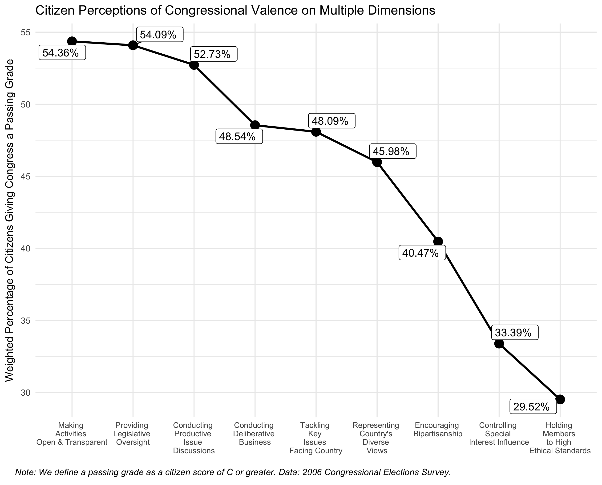
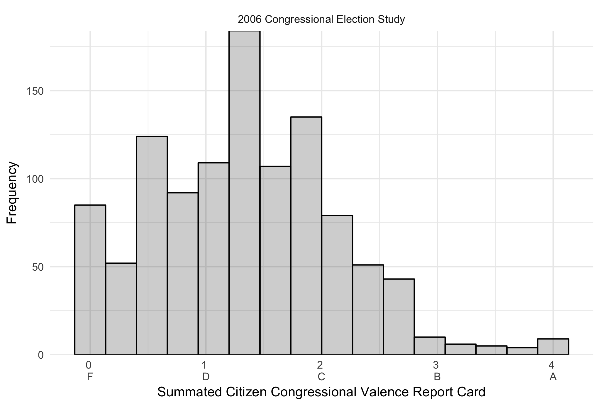
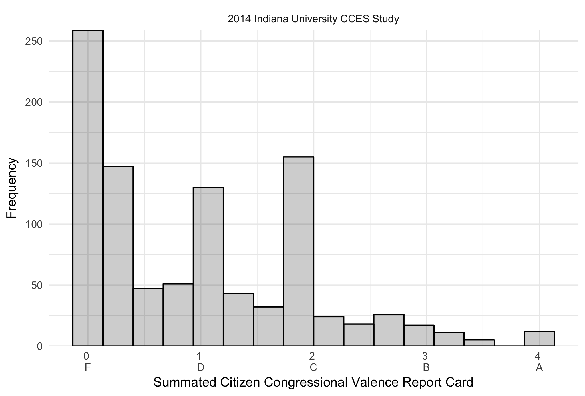
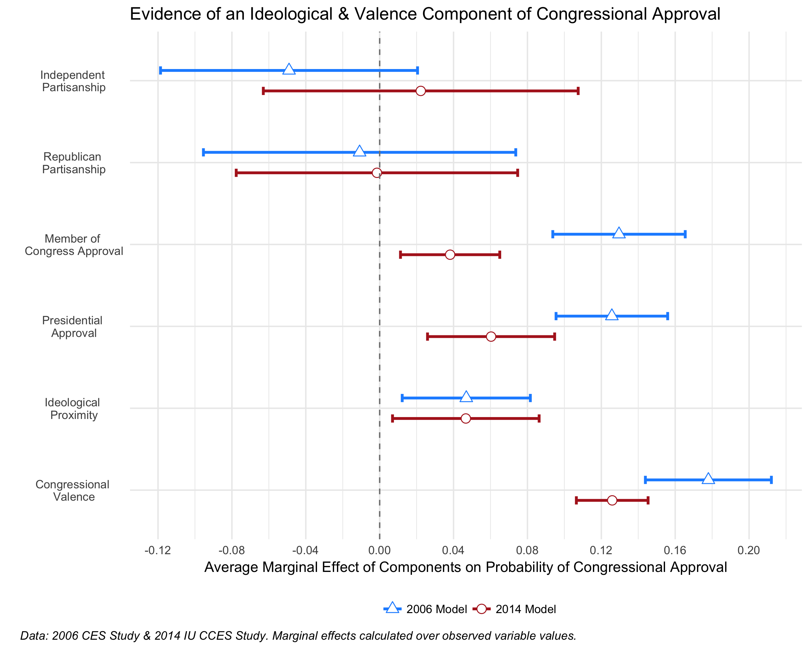
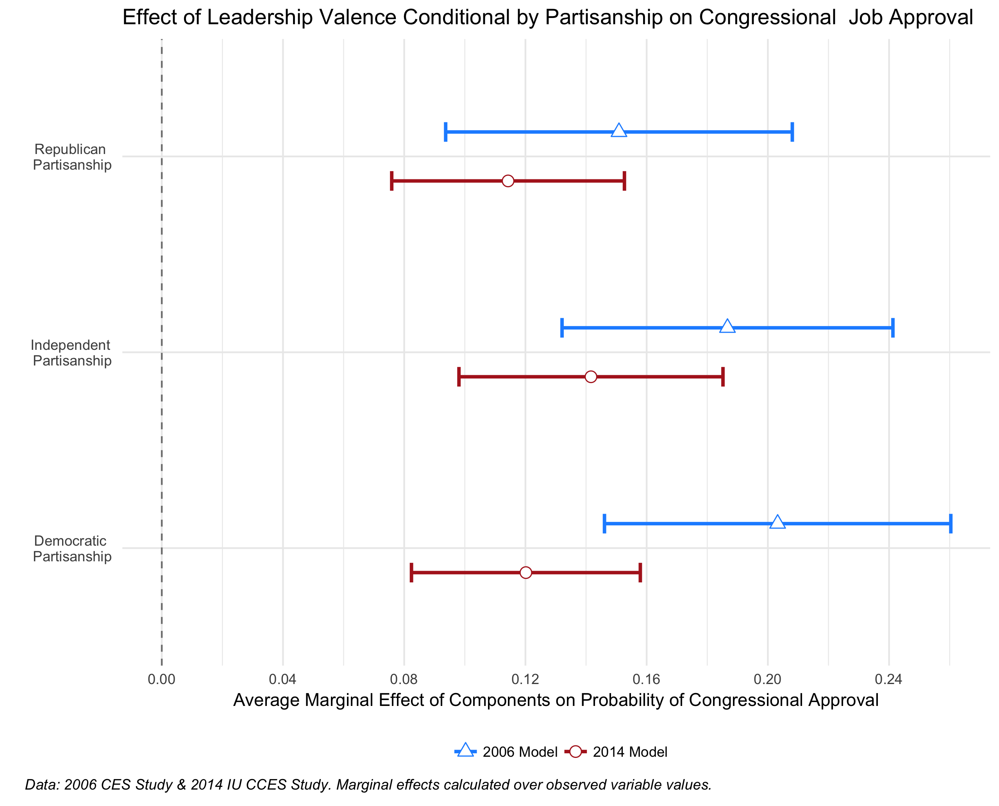

Exploring the Causes of Congressional Unpopularity: The Role of Policy & Valence in Citizen Attitudes about Congressional Job Approval
Preliminary Congressional Approval Model Prepared for the Dirksen Congressional Research Grant Program Application
Carlos Algara & Joseph Broad
4/1/2018
Welcome & Overview of Motivating Analysis
Welcome to this page & thank you for your consideration of our application for the prestigous Congressional Research Grant program sponsored by The Dirksen Congressional Center. In this page, you can find the specification of a congressional approval model that we use to motivate our grant application. Drawing on the only two sources of data which contain both citizen perceptions of congressional valence and measures of ideological proximity, the 2006 Congressional Election Study and the 2014 Indiana University Cooperative Congressional Election Study Module, we test our model in the analysis below. Specifically we posit that:
Congressional approval is a function of collective ideological policy representation that Congress provides its citizens. As a consequence, citizens are more likely to approve of Congress the closer their preferences align to the ideological orientation of congressional policies. Building on prominent theories of legislative organization positing that congressional outputs are a reflection of the ideological preferences of the majority party (Cox & McCubbins 2005), we hypothesize that greater congruence between a citizen’s ideological preferences and the ideological location of the congressional majority should result in higher liklihood of approving of congressional job performance.
Congressional approval is a function of the collective representation the Congress provides in the area of leadership valence. Drawing on recent work of citizen vote-choice and the nature of candidate quality (Stone 2017) (Stone & Simas 2010), we define congressional leadership valence as non-policy considerations that citizens normatively value in their legislature. These include having a legislature that is transparent in its processes, not beholden to special interest, spends its time working on the pressing policy issues facing the country, encourages bipartisan legislative behavior, conducts deliberative and productive debates, and is comprised of ethical members. We posit that greater perceptions of congressional leadership valence by citizens should result in a higher likelihood of approving of congressional job performance.
Given the relatively limited literature on citizen perceptions of Congress, this model is the first to argue that congressional approval is a function of ideological congruence and citizen perceptions of congressional leadership valence. Using the limited amount of data on citizen attitudes of congressional leadership valence, we show that higher assessments of leadership is correlated with higher congressional job approval assessments. Using these unique and rich datasets from the 2006 Congressional Election Study and the 2014 Indiana University Cooperative Congressional Election Study Module, we find strong support for the empirical model we present. The remaining analysis below articulates the model specification and substantive findings of our model that moviate our proposal.
Specifying a Preliminary Model of Congression Approval
To motivate the potential that positive leadership valence and greater policy congruence causes an increase in citizen perceptions of congressional approval, we specify a statistical model of congressional approval. Specifically, we use the 2006 Congressional Election Study 2014 Indiana University CCES Module to estimate a model positing that citizen perceptions of congressional job performance is a function of leadership valence attitudes and the degree of congruence between citizen ideological preferences and congressional policies. We concentrate on the specification of our two main variables of interest below.
Key Independent Variables: Citizen Valence Perceptions & Ideological Proximity

As noted in the proposal, these surveys feature a nationally representative sample of citizen attitudes of congressional leadership valence across multiple dimensions, such as the degree to which Congress holds itself to a high ethical standard or the degree Congress spends its time working to solve the nation’s problems. Citizens evaluate their assessments on these dimensions of congressional valence on a scale from “F”" (0) to “A”" (4). The two figures above articulate the percentage of respondents that give Congress a passing grade of C or better. As one can see, the Congress is not held in high regard on any of the multiple dimensions of Congressional leadership valence. For example, only approximately 33% of respondents in the 2006 study (the left figure) gave Congress a “C” or better on controlling special interest influence over legislation. In the 2014 study (the right figure), only about 31% of citizens gave Congress a passing grade on the same salient dimension.
To construct our measure of citizen valence perceptions, we take the mean summated rating scale for the valence items in each dataset. These two measures of citizen valence perceptions, akin to a “report card” on a 4 point scale, have a high degree of internal validity (Cronbach’s \(\alpha\) = 0.88 for the 2006 items & 0.93 for the 2014 items, respectively). The figure below shoes the distribution of summated rating scales for the 2006 & 2014 studies.

As one can see, citizens generally have a low opinion of congressional leadership valence. For the 2006 the distribution shows that citizens gave Congress a median grade of approximately 1.25 or, in other words, a “D”. The distribution is decidely more negative in the 2014 study, with the median grade for congressional leadership valence being an “F” for the 2014 study. This summated rating scale is our measure of citizen perceptions of leadership valence.
We now turn to the specification of our other key independent variable of interest, ideological proximity to Congressional policies. Given the prominence of the majority party in controlling the legislative agenda and being directly responsible for congressional policy outputs (Cox & McCubbins 2005), we specify ideological proximity between citizens and congressional policies as the proximity between based on a respondent’s estimated ideal point (\(C_{i}\)) and the ideological positions of the two congressional parties (\(DM_{j}\) and \(RM_{j}\)). This model is articulated below:
\[\text{Proximity} = |RM_{j} - C_{i}| - |DM_{j} - C_{i}|\]
The resulting quantity in the above equation captures the relative proximity between a citizen’s ideological ideal point (preference) and the ideological ideal point locations (preferences) of the two congressional parties (the pivotal majority party which sets the ideological orientation of congressional outputs and the minority party offering policy alternatives). If the quantity in the equation is negative (\(|RM_{j} - C_{i}| < |DM_{j} - C_{i}|\)), the respondent is closer to congressional majority Republicans in ideological proximity. When this standard spatial model measure (Downs 1957) is positive, (\(|RM_{j} - C_{i}| > |DM_{j} - C_{i}|\)), the respondent is closer to congressional minority Democrats in ideological proximity. We use Aldrich-McKelvey scaling methods to correct for ideological placement biases of citizens and placement of congressional parties (see Ramey 2016 for a methodological discussion). These biases include placing the opposition party in greater ideological extremity (i.e. misplacement of stimuli) or misinterpreting the policy place.
We control for alternative predictors of congressional approval identified by the literature, such as partisanship (Kimball 1997), approval of a citizen’s own member of Congress (Fenno 1978), and citizen evaluations about the president (Durr 1997). Our dependent variable of interest is whether a citizen indicates job approval of Congress or job disapproval of Congress. This congressional approval dependent variable is coded 1 if a citizen approves of congressional job performance and 0 if a citizen disapproves of congressional job performance. We should note that approximately 37% of respondents in the 2006 study approved of Congress and approximately 18% of respondents approved of Congress in the 2014 study.
Motivating Evidence of Policy & Valence Component of Congressional Approval

The figure above articulates the results of our motivating model. We find strong evidence that greater congruence between citizen ideological preferences and congressional policy outputs is correlated with a higher probability of approving of Congress. Going from the minimum value of ideological congruence to the maximum value of ideological congruence, the probability of approving of congressional job approval significantly increases by 5% in both the 2006 & 2012 model. Similarly, going from the minimum value of summated congressional leadership valence perceptions (an “F” grade or 0 value) to the maximum value (an “A” grade or 4.0 value) significantly raises the probability of approving of Congress by a staggering 18% in 2006 and 13% in 2014. These are the results of two distinct additive models of congressional approval, one for the 2006 CES study and the other for the 2014 study. Note that, congruent with previous studies of congressional approval, presidential approval & individual member of Congress approval are significant approval predictors. These models are specified with relevant survey weights have a sample size of \(N\) = 891 for 2006 & \(N\) = 637 for 2014. The goodness-of-fit BIC statistics for the two models are 865.19 (2006) and 330.51 (2014), respectively. Full model output can be found in the table below.
| Dependent variable: | ||
| Approval of Congressional Job Performance | ||
| 2006 CES Model | 2014 IU Model | |
| (1) | (2) | |
| Independent Partisan | -0.326 | 0.284 |
| (0.238) | (0.542) | |
| Republican Partisan | -0.071 | -0.020 |
| (0.283) | (0.529) | |
| Member of Congress Approval | 0.836*** | 0.809*** |
| (0.115) | (0.239) | |
| Presidential Approval | 0.312*** | 0.626** |
| (0.119) | (0.276) | |
| Ideological Proximity | 1.184*** | 1.689*** |
| (0.137) | (0.178) | |
| Congressional Leadership Valence | 0.862*** | 0.512*** |
| (0.132) | (0.188) | |
| Constant | -6.463*** | -7.192*** |
| (0.530) | (0.941) | |
| Observations | 891 | 637 |
| Log Likelihood | -408.823 | -142.657 |
| Akaike Inf. Crit. | 831.645 | 299.314 |
| Note: | p<0.1; p<0.05; p<0.01 | |

Given the strong correlation between higher congressional leadership valence scores and greater probability of approval, we respecify the model to explore whether this valence-induced gain in approval is conditional on partisanship. Specifically, we specify an interaction term between respondent partisanship & their assessment of congressional leadership valence to estimate the potential conditional relationship. The figure above shows that higher leadership valence increases the probability of congressional approval among all citizens, regardless of political partisanship. Indeed, for the 2006 model, going from a summated “F” (or 0 in the summated valence value measure) grade to an “A” grade (or 4 in the summated valence value measure) on leadership valence increases the probability of congressional approval by 20% for Democrats, 19% for Independents, and 15% for Republicans. For the model using the 2014 IU study data, going from the minimum value of valence to the maximum increases the probability of approval by 12% for Democrats, 14% for Independents, and 11% for Republicans. Full model results can be found below.
| Dependent variable: | ||
| Approval of Congressional Job Performance | ||
| 2006 CES Model | 2014 IU Model | |
| (1) | (2) | |
| Independent Partisan | -0.230 | -2.838 |
| (0.575) | (1.878) | |
| Republican Partisan | 0.585 | -0.160 |
| (0.586) | (0.813) | |
| Member of Congress Approval | 0.871*** | 0.508*** |
| (0.133) | (0.189) | |
| Presidential Approval | 0.840*** | 0.864*** |
| (0.116) | (0.247) | |
| Ideological Proximity | 0.313*** | 0.756*** |
| (0.120) | (0.289) | |
| Congressional Leadership Valence | 1.371*** | 1.509*** |
| (0.260) | (0.244) | |
| Independent Partisan X Leadership Valence | -0.071 | 1.579* |
| (0.358) | (0.839) | |
| Republican Partisan X Leadership Valence | -0.429 | 0.024 |
| (0.337) | (0.376) | |
| Constant | -6.760*** | -7.000*** |
| (0.628) | (1.000) | |
| Observations | 891 | 637 |
| Log Likelihood | -407.836 | -140.003 |
| Akaike Inf. Crit. | 833.673 | 298.007 |
| Note: | p<0.1; p<0.05; p<0.01 | |
Limitations of Observational Model & Need for Causal Analysis of Approval
The results of this preliminary model of congressional approval, the first to argue that congressional approval is a function of collective congressional policy representation and leadership valence, motivates our proposal exploring the causal effects of policy and valence on citizen evaluations of congressional job performance. Using the very limited observational survey data, we show that higher ideological proximity and collective leadership perceptions are correlated with a higher probability of approval. Moreover, our model is the first to find a strong relationship between valence and approval and we find evidence that higher valence evaluations is correlated with a higher probability of approval among Democrats, Republicans, and political independents. This suggests that Congress may be able to increase its approval by providing better leadership valence and returning to the bipartisan, deliberative, and Congresses that defined the 20\(^{th}\) century.
However, these results have a severe limitation. Since we rely on observational data, we are unable to address whether policy proximity and valence has a causal effect on job approval. This is due to the fact that these data rely on citizen’s own perceptions of the location of congressional policies and the leadership valence provided by Congress which, given congressional unpopularity, is inherently biased to be poor. In the following section, we propose an innovative conjoint experiment to further explore what causes citizen assessments of congressional job approval by manipulating the ideological policy and leadership valence citizens receive from their Congress. We argue that such an experiment is critical to understand what causes and shapes citizen’s evaluations toward their Congress.
Please refer and click here for our: Dirksen Congressional Center Research Grant Proposal, for our proposed experimental design and more context motivating this project assessing citizen perceptions of congressional job performance.
Thank you for considering our Dirksen Congressional Center Research Grant Proposal!